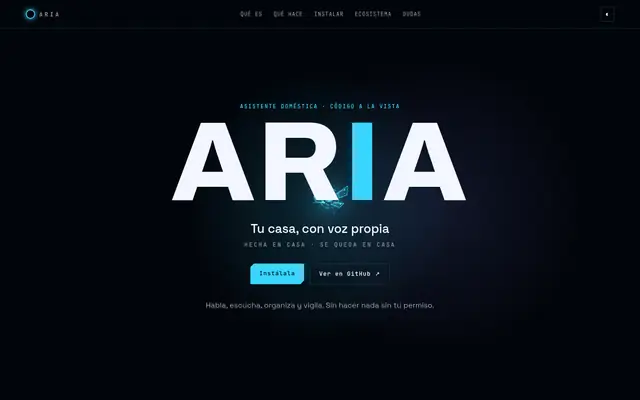
Casa
ARIA
Asistente de IA autoalojado que gestiona las apps de tu casa: chat y voz, Telegram, rutinas y control parental. Gratis, en Raspberry Pi o PC.
FULL-STACK · PRODUCTO · IA
Senior Full-Stack Developer · NTT DATA · Frontend + Backend + IA
Construyo productos digitales de principio a fin: desde una interfaz clara y rápida hasta APIs robustas, procesos batch y automatizaciones que aguantan el mundo real.
QUIÉN HAY DETRÁS
Soy desarrollador de software senior con más de 3 años de experiencia, actualmente en NTT DATA. Me muevo entre frontend y backend con React, Angular, TypeScript, Java, Spring Boot y Spring Batch.
Incorporo la IA como una capa transversal: una herramienta para entender mejor los problemas, automatizar lo repetitivo y crear productos más útiles.
«Mi forma de trabajar: entender el problema, simplificarlo y convertirlo en software útil. El buen diseño es tan importante como el buen código.»
LABORATORIO PERSONAL

Asistente de IA autoalojado que gestiona las apps de tu casa: chat y voz, Telegram, rutinas y control parental. Gratis, en Raspberry Pi o PC.
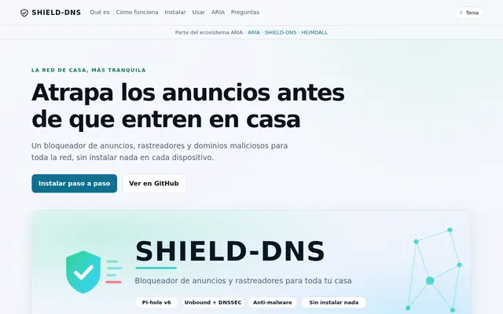
Bloqueador de anuncios y rastreadores para toda la casa (Pi-hole + Unbound con DNSSEC), con guía paso a paso.
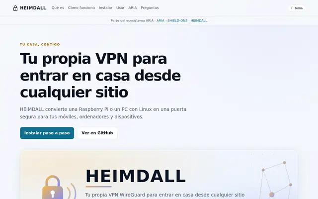
Tu propia VPN WireGuard para entrar en casa desde fuera, con guía paso a paso.
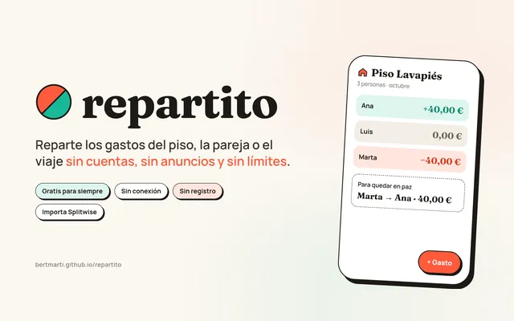
Cuentas claras y el chocolate espeso.
Reparte los gastos del piso, la pareja o el viaje: gratis, sin cuentas, sin anuncios y sin conexión. Web (PWA) y app de Android, con sincronización por enlace cifrado y auditoría de seguridad independiente.
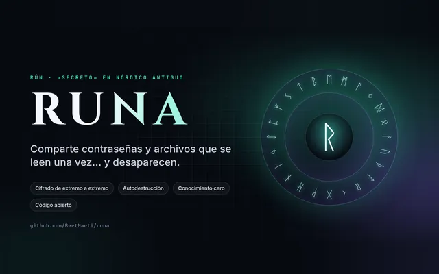
Secretos que se leen una vez… y desaparecen.
Comparte contraseñas y archivos cifrados de extremo a extremo que se autodestruyen al leerse. Autoalojable con Docker, conocimiento cero, auditado.
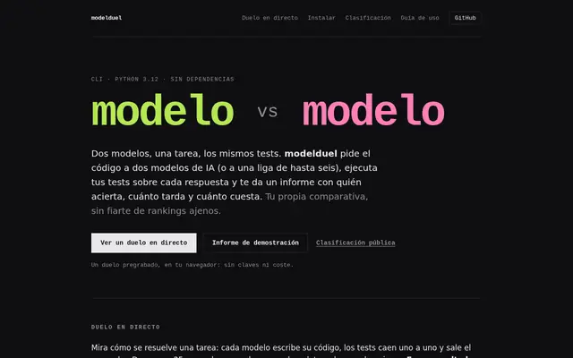
Dos modelos de IA, una tarea, los mismos tests: informe con aciertos, tiempo y coste.
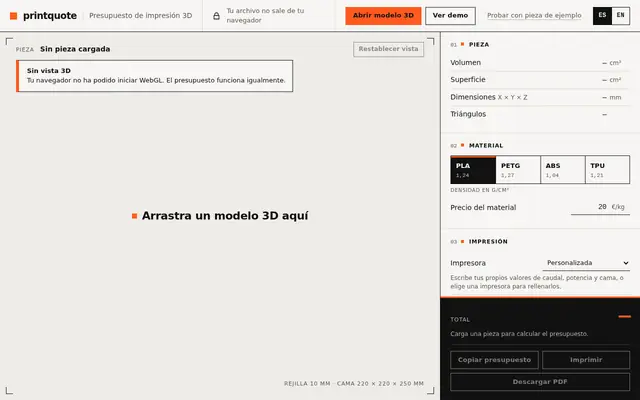
Presupuesta una impresión 3D en segundos: arrastra un STL, OBJ o 3MF, míralo en 3D y obtén peso, tiempo y precio. 100 % en el navegador, sin subir nada.
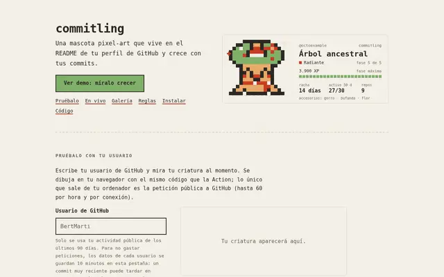
Mascota pixel-art que vive en tu perfil de GitHub y crece con tus commits.
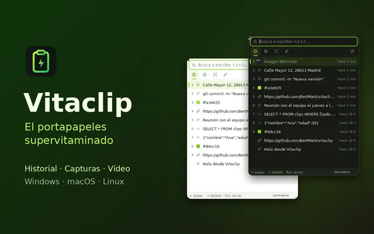
El portapapeles supervitaminado.
Historial de todo lo que copias (como Ditto), capturas con anotaciones (como Lightshot) y grabación de pantalla en MP4. App de escritorio gratis, sin cuentas y todo en tu equipo.
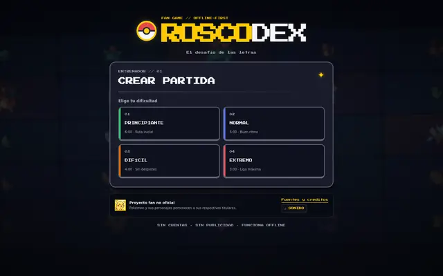
Rosco de preguntas fan de Pokémon con estética pixel-art: gratis, sin cuentas y sin conexión.
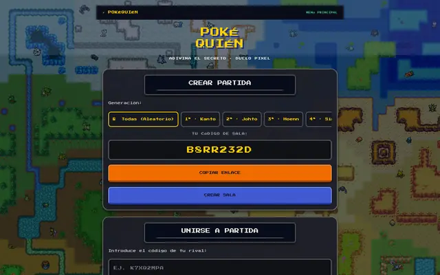
Duelo de deducción tipo «¿Quién es quién?» con Pokémon, contra la máquina o contra un amigo.
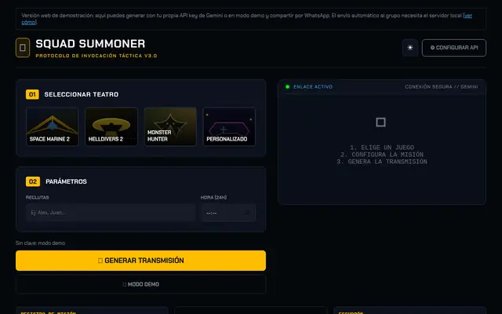
Convoca a tu escuadrón con mensajes épicos generados por IA y compártelos por WhatsApp.

HABLEMOS
Si quieres construir algo útil, puedes encontrarme aquí: